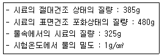
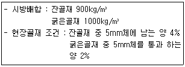
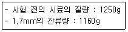
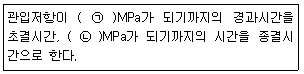
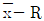
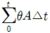
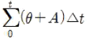
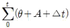
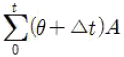
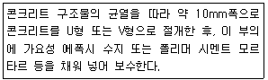

콘크리트산업기사 (2017-08-26 기출문제)
1과목: 콘크리트재료 및 배합
1. 현장에서 12회의 콘크리트 압축강도를 측정한 결과 표준편차는 2.0MPa이었다. 설계기준 압축강도 (fck)가 28MPa 일 때 배합강도 (fcr)는?
- 30.0MPa
- 35.0MPa
- 36.5MPa
- 38.0MPa
(정답률: 74%)

2. 골재의 체가름 시험(KS F 2502)에 사용되는 시료에 대한 설명으로 틀린 것은?
- 굵은 골재의 경우 사용하는 골재의 최대 치수(mm)의 0.2배를 kg으로 표시한 양을 시료의 최소 조건 질량으로 한다.
- 1.2mm체를 질량비로 95%이상 통과하는 잔골재는 시료의 최소 건조 질량을 100g으로 한다.
- 1.2mm체를 질량비로 5%이상 남는 잔골재는 시료의 최소 건조 질량을 500g으로 한다.
- 구조용 경량 골재 시료의 최소 건조 질량은 일반골재 규정 값의 2배로 한다.
(정답률: 49%)
3. 콘크리트용 골재의 유해물 함유량의 허용값에 대한 설명으로 옳은 것은?
- 굵은 골재에 포함된 점토 덩어리와 연한 석편의 합은 5%를 초과하지 않아야 한다.
- 콘크리트 표면이 마모를 받는 경우 0.08mm체 통과량은 굵은골재 1% 잔골재 2% 이하 이다.
- 콘크리트 표면이 중요한 부분에서는 석탄 및 갈탄의 함유량은 잔골재 및 굵은골재 모두 각각 0.3% 이하이다.
- 잔골재에 포함된 염하물량(NaCl 환산량)은 0.02%이하이다.
(정답률: 56%)
4. 다음 중 골재에 관련된 일반적인 시험이 아닌 것은?
- 체가름시험
- 밀도 및 흡수율시험
- 압축강도시험
- 안정성시험
(정답률: 80%)
5. 화학 혼화제 중 AE감수제를 성능에 따라 분류할 때 그 종류에 속하지 않는 것은?
- 표준형
- 지연형
- 급결형
- 촉진형
(정답률: 63%)
6. 콘크리트 표준시방서에 제시된 콘크리트 배합강도에 대한 설명으로 틀린 것은?
- 콘크리트의 배합강도는 설계기준강도보다 충분히 크게 정해야 한다.
- 콘크리트의 압축강도의 표준편차는 실제 사용한 콘크리트의 30회 이상의 시험 결과로부터 결정하는 것을 원칙적으로 한다.
- 압축강도 시험횟수가 20회일 때, 표준편차의 보정계수는 1.08이다.
- 압축강도 시험횟수가 10회일 때, 표준편차의 보정계수는 1.16이다.
(정답률: 66%)
7. 콘크리트에 사용되는 혼화재의 종류와 특성에 관한 조합으로 옳지 않은 것은?
- 고로슬래그 미분말-잠재수경성
- 플라이 애시-포졸란 반응
- 실리카 퓸-단위수량 감소
- 팽창재-균열저감
(정답률: 58%)
8. 굵은 골재의 밀도시험 결과가 아래 표와 같을 때 절대건도 상태의 밀도를 구하면?

- 2.25g/cm3
- 2.48g/cm3
- 2.61g/cm3
- 2.75g/cm3
(정답률: 64%)
9. 굵은골재 최대치수의 표준값에 대한 설명으로 옳은 것은?
- 일반적인 구조물인 경우 15mm를 사용한다.
- 단면이 큰 구조물인 경우 40mm를 사용한다.
- 무근콘크리트의 경우 25mm를 사용한다.
- 무근콘크리트의 경우 부재 최소치수의 1/3을 초과해서는 안 된다.
(정답률: 54%)
10. 콘크리트의 혼합에 사용되는 물에 관한 다음 설명중 KS F 4009 부속서 2(레디믹스트 콘크리트의 혼합에 사용되는 물)의 규정에 대한 설명으로 옳은 것은?
- 하천수는 상수도물 이외의 물의 품질규정에 적합해야만 사용할 수 있다.
- 회수수의 품질규정에는 용해성 증발잔유 물량의 상한치가 정해져 있다.
- 상수도물은 시멘트 응결 시간의 차, 모르타르 압축 강도비시험을 실시하여 품질규정을 만족할 경우 사용이 가능하다.
- 슬러지수는 배합수정을 하면 슬러지 고형분율에 관계없이 사영할 수 있다.
(정답률: 58%)
11. 골재 품질에 관한 다음 설명 중 일반적인 경향으로서 적당하지 않은 것은?
- 둥근 공재는 평평한 골재보다 실적률이 크다.
- 입도가 미세한 골재는 큰 골재보다 조립률이 크다.
- 밀도가 작은 골재는 큰 골재보다 흡수율이 크다.
- 굵은골재의 최대치수가 클수록 단위수량 및 단위시멘트량이 감소하다.
(정답률: 30%)
12. 배합설계에서 고려해야할 항목과 거리가 먼 것은?
- 물-결합재비
- 슬럼프
- 잔골재율
- 타설시간
(정답률: 84%)
13. KS 관련규격에 따라 콘크리트용 잔골재에 대한 시험을 하고자 할 때, 시험시간이 가장 오래 소요되는 시험항목은? (단, 시험에 필요한 용액은 미리 준비되어 있는 것으로 한다.)
- 흡수율
- 안정성
- 유기불순물
- 염화물함유량
(정답률: 65%)
14. 콘크리트용 잔골재의 특성을 평가하기 위한 시험으로 거리가 먼 것은?
- 마모율
- 흡수율
- 안정성
- 절대건조밀도
(정답률: 62%)
15. 시방배합의 단위량과 현자골재의 입도가 다음과 같을 때, 현장배합의 단위잔골재량 및 단위잔골재량 및 단위굵은골재량은?

- 잔골재량=917kg/m3, 굵은골재량=983kg/m3
- 잔골재량=940kg/m3, 굵은골재량=960kg/m3
- 잔골재량=883kg/m3, 굵은골재량=1017kg/m3
- 잔골재량=880kg/m3, 굵은골재량=1020kg/m3
(정답률: 61%)
16. 조립률이 2.20과 3.10인 두 종유의 골재를 질량비로 각각 7.3의 비율로 혼합한 경우 혼합골재의 조립률은?
- 2.74
- 2.65
- 2.58
- 2.47
(정답률: 57%)
17. 시멘트 페이스트의 강도발현에 대한 설명으로 옳은 것은?
- C3A와 C4AF는 강도증강에 큰 영향을 미친다.
- 시멘트 분말도가 높을수록 강도발현이 느려진다.
- 물-시멘트비가 클수록 치밀한 구조를 얻기 어렵다.
- 물의 온도가 높으면 C3S의 수화가 촉진되어 응결 경화가 느려진다.
(정답률: 57%)
18. 콘크리트의 배합에서 잔골재율에 관한 설명으로 틀린 것은?
- 잔골재율이 증가하면 점성이 증가한다.
- 잔골재율이 증가하면 슬럼프가 감소한다.
- 잔골재율이 증가하면 공기량이 증가한다.
- 잔골재율을 크게 하면 단위수량 및 단위 시멘트량을 절약할 수 있어 경제적으로 유리하다.
(정답률: 45%)
19. 포틀랜드 시멘트를 화학 분석한 결과 Na2O가 0.1% 및 K2O가 0.9%이다. 이 시멘트의 총알칼리량은?
- 0.69%
- 0.78%
- 0.80%
- 1.00%
(정답률: 65%)
20. 굵은골재의 마모시험 결과가 아래 표와 같을 때 이 굵은 골재의 마모율은?

- 3.2%
- 5.6%
- 6.2%
- 7.2%
(정답률: 68%)
2과목: 콘크리트제조, 시험 및 품질관리
21. 슬럼프가 25mm인 레디믹스트 콘크리트의 슬럼프 허용 오차로서 옳은 것은? (단, KS F 4009 레디믹스트 콘크리트의 규정을 따른다.)
- 5mm
- 10mm
- 15mm
- 20mm
(정답률: 69%)
22. 지름 150mm, 높이 300mm 인 공시체의 쪼갬인장강도 시험을 실시한 결과공시체가 100kN의 하중에 퐈괴되었다면 콘크리트의 인장강도는?
- 1.0MPa
- 1.2MPa
- 1.4MPa
- 1.6MPa
(정답률: 78%)
23. 믹서의 효율을 시험하기 위하여 믹서로 비빈 굳지 않은 콘크리트 중의 모르타릐와 굵은골재량의 변화율 시험을 수행하고자 한다. 굵은골래의 최대치수가 25mm인 경우 시료의 양으로서 가장 적합한 것은?
- 10L
- 20L
- 25L
- 50L
(정답률: 70%)
24. 어떤 콘크리트시료의 압축강고 시험결과 평균값이 24MPa이고 ,표중편차가 4.8MPa이었다면 변동계수는?
- 14%
- 17%
- 20%
- 24%
(정답률: 64%)
25. 굳지 않은 콘크리트에 발생하는 초기 균열의 일종인 침하균열을 방지하기 위한 대책으로서 틀린 것은?
- 콘크리트의 단위 수량을 될 수 있는 한 적게 한다.
- 침하 종료 이전에 급격하게 굳어져 점착력을 잃지 않는 시멘트나 혼화제를 선정한다.
- 타설속도를 빠르게 하고, 1회의 타설높이를 크게 한다.
- 균열을 조기에 발견하고, 각재 등으로 두드리는 재타법이나 흑ㄹ손으로 눌러서 균열을 폐색시킨다.
(정답률: 75%)
26. 콘크리트의 받아들이기 품질검사에 대한 설명으로 틀린 것은?
- 콘크리트의 받아들이기 품질관리는 콘크리트를 타설하기 전에 실시하여야 한다.
- 강도검사는 콘크리트의 압축강도 시험에 의해 실시하는 것은 표중으로 한다.
- 내구성 검사는 공기량, 염소이온량을 측정하는 것으로 한다.
- 검사결과 불합격으로 판정된 콘크리트는 사용할 수 없다.
(정답률: 72%)
27. 콘크리트의 탄산화에 대한 설명으로 틀린 것은?
- 콘크리트의 탄산화는 대기중의 이산화단소에 의해 촉징된다.
- 탄산화 깊이를 조사하기 위한 페놀프탈 레인 용액의 농도는 10%이상으로 하여야 정확한 색상변화가 나타난다.
- 탄산화에 대한 대책으로는 양질의 골재를 사용하고 물 - 시멘트비를 작게하는 방법 들이 있다.
- 턴산회의 진행은 콘크리트 중의 철근 부식현상을 가속화시키는 원인이 된다.
(정답률: 71%)
28. 콘크리트의 워커빌리티(반죽질기)에 영향을 주는 인자에 대한 설명으로 틀린 것은?
- AE제에 의해 콘크리트 중에 연행된 미세한 기포는 콘크리트의 워커빌리티를 개선한다.
- AE제에 의한 연행공기량이 1%증가할 때 콘크리트의 슬럼프는 약 2mm정도 크게 된다.
- 공기량에 의한 워커빌리티 개선효과는 빈배합의 경우 현저하다.
- 콘크리트의 비빔온도가 높을수록 워커빌리티는 향상된다.
(정답률: 63%)
29. 재료의 비비기에 대한 사항 중 옳지 않은 것은?
- 비비기 시간은 시험에 의해 정하는 것은 원칙으로 한다. 비비기 시간에 대한 시험을 실시하지 않은 경우 그 최소 시간은 강제식 믹서일 때에는 1분 30초 이상을 표준으로 한다.
- 비비기를 시작하기 전에 미리 믹서 내부를 모르타르로 부탁하여야 한다.
- 믹서 안의 콘크리트를 전부 꺼낸 후가 아니면 믹서 안에 다음 재로를 넣지 않아야 한다.
- 연속 믹서를 사용할 경우, 비비기 시작 후 최초에 배출되는 콘크리트는 사용하지 않아야 한다.
(정답률: 75%)
30. 물-시멘트비를 작게 하여도 개선되지 않는 콘크리트의 내구성은 어느 것인가?
- 탄산화
- 동해
- 염해
- 알칼리 골재 반응
(정답률: 48%)
31. 관입 저항침에 의한 콘크리트의 응결시험에 대한 아래 표의 ( )에 들어갈 수치로 옳은 것은?

- ㉠ 3.0, ㉡ 28.0
- ㉠ 3.5, ㉡ 28.0
- ㉠ 3.0, ㉡ 28.5
- ㉠ 3.5, ㉡ 28.5
(정답률: 67%)
32. 관리도의 종류와 적용 이론에 대한 설명으로 틀린 것은?
- p관리도는 이항분포에 따른다.
- c관리도는 푸아송분포에 따른다.
- x관리도는 이항분포에 따른다.

관리도는 정규분포에 따른다.
(정답률: 51%)
33. 일반 콘크리트에 사용되는 재료의 계량에 대한 설명으로 옳지 않은 것은?
- 사용재료는 시방배합을 현장배합으로 고친 다음 현장배합으로 계량하여야 한다.
- 골재가 건조되어 있을 때의 유효흡수율 값은 골재를 적절한 시간 동안 흡수시켜서 구하여야 한다.
- 혼화재료를 녹이거나 묽게 희석시키시 위해 사용하는 물은 단위수량에서 제외 한다.
- 각 재료는 1배치씩 질량으로 계량하여야 한다.
(정답률: 71%)
34. 레디믹스트 콘크리트의 품질 기준중 여화물 함유량에 대한 규정내용으로 옳은 것은?
- 염소 인온(Cl-)량으로서 0.6kg/,m3 이하로 한다. 다만., 구입자의 승인을 얻은 경우에는 1.2kg/m3 이하로 할 수 있다.
- 염소 이온(Cl-)량으로서 0.5kg/m3 이하로 한다. 다만, 구입자의 승인을 얻은 경우에는 1.0kg/m3 이하로 할 수 있다.
- 염소 이온(Cl-)량으로서 0.4kg/m3 이하로 한다. 다만, 구입자의 승인을 얻은 경우에는 0.8kg/m3 이하로 할 수 있다.
- 염소 이온(Cl-)량으로서 0.3kg/m3 이하로 한다. 다만, 구입자의 승인을 얻은 경우에는 0.6kg/m3 이하로 할 수 있다.
(정답률: 77%)
35. 중성화의 깊이가 6.4m가 되려면 일반 적인 경우에 있어서 소요되는 경과년수는 약 몇 년인가?(단, 중성화 속도 계수는 6이다.)
- 1.06년
- 1.14년
- 1.22년
- 1.30년
(정답률: 56%)
36. 1배치에 사용되는 굵은 골재량이 1000kg인 경우 허용 계량오차를 고려한 굵은 골재의 허용범위를 구한 것으로 옳은 것은?
- 990kg~1020kg
- 980kg~1010kg
- 980kg~1020kg
- 970kg~1030kg
(정답률: 65%)
37. 압력법에 의한 굳지 않은 콘크리트의 공기량 시험에 대한 설명으로 틀린 것은?
- 물을 붓고 시험하는 경우(주수법) 공기량 측정기의 용적은 적어도 7L 이상으로 한다.
- 시료를 용기에 채울 때 거의 같은 양으로 3층으로 채우고, 각 층은 다짐봉으로 25회씩 균등하게 다져야 한다.
- 공기량 측정 종료 후에는 덮개를 떼기 전에 주수구와 배수구를 양쪽으로 열고 압력을 푼다.
- 콘크리트의 공기량은 측정한 콘크리트의 겉보기 공기량에서 골재 수정계수를 뺀 갑으로 구한다.
(정답률: 66%)
38. 콘크리트 내의 철근부식 유무를 평가하기 위하여 실시하는 비파괴시험이 아닌 것은?
- 질산은적정법
- 분극저항법
- 전기저항법
- 자연전위법
(정답률: 72%)
39. 공시체의 형상 및 시험방법이 압축강도에 미치는 영향에 대한 설명으로 틀린 것은?
- 원주형공시체의 높이와 지름의 비인 H/D의 값이 커질수록 강도가 작게 된다.
- 재하속도가 빠를수록 강도가 크게 나타난다.
- 캐핑의 두께는 가증한 얇은 것이 좋으며,6mm를 넘으면 강도의 저하가 커진다.
- 시험 직전에 공시체를 건조시키면 일시적으로 강도가 감소한다.
(정답률: 71%)
40. 콘크리트 응결 특성에 관계되는 요소로서 거리가 먼 것은?
- 굵은 골재의 최대 치수
- 시멘트의 품질
- 혼화재료의 품질
- 타설시 온도
(정답률: 69%)
3과목: 콘크리트의 시공
41. 건식방식의 숏크리트 배합을 정할 때 선정해야 하는 항목이 아닌 것은?
- 굵은 골재의 최대 치수
- 시멘트의 품질
- 혼화재료의 품질
- 타설시 온도
(정답률: 32%)
42. 콘크리트의 비비기로부터 타설이 끝날 때까지의 시간에 대한 설명으로 옳은 것은?
- 원칙적으로 외기온도가 25℃이상일 때는 1시간, 25℃미만일, 때에는 1.5시감을 넘어서는 안 된다.
- 원칙적으로 외기온도가 25℃이상일때는 1시간, 25℃미만일, 때에는 2시간을 넘어서는 안 된다.
- 원칙적으로 외기온도가 25℃이상일 때는 1.5시간, 25℃미만일 때에는 2시간을 넘어서는 안 된다.
- 원칙적으로 외기온도가 25℃이상일 때는 1.5시간, 25℃미만일 때에는 2.5시간을 넘어서는 안 된다.
(정답률: 79%)
43. 방사선 차폐용 콘크리트에 일반적으로 사용되는 골재가 아닌 것은?
- 팽창성 혈암
- 바라이트
- 자철광
- 적철광
(정답률: 77%)
44. 한중 콘크리트의 강도를 예측하는데 이용되는 적산 온도의 개념을 나타낸 식으로 옳은 것은? (단, θ:△t시간 중의 콘크리트의 평균 양생온도(℃), A:정수로서 일반적으로 10℃를 사용, △t:시간(일))




(정답률: 73%)
45. 다음 중 서중 콘크리트에서 발생하는 균열에 대한 대책으로 옳은 것은?
- 단위 시멘트량을 가능한 한 많게 한다.
- 지연형 감수제의 사용을 고려한다.
- 현장에서 물을 첨가한다.
- 양생중 보온대책을 수립힌다.
(정답률: 59%)
46. 숏크리트 작업에 대한 일반적인 사항을 설명한 것으로 틀린 것은?
- 천단부 시공시에 노즐을 뿜어붙일 면솨 45℃의 각도를 유지하여 뿜어붙이는 면적을 증가시켜야 한다.
- 숏크리트는 빠르게 운분하고, 급결제를 첨가한 후는 바로 뿜어붙이기 작업을 시시하여야 한다.
- 뿜어붙일 면에 용수가 있을 경우에는 배수 파이프나 배수 필터를 설치하는 등 적절한 배수처리를 하여야 한다.
- 숏크리트는 뿜어붙인 콘크리트가 흘러내리지 않는 범위의 적당한 두께로 뿜어붙인다.
(정답률: 80%)
47. 매스콘크리트로 다루어야 하는 구조물의 부재 치수의 일반적인 표준으로 옳은 것은?
- 넓이가 넓은 평판구조의 경우 두께 0.5m이상
- 넓이사 넓은 평판구조의 경우 두께 0.3m이상
- 하단이 구속된 벽조의 경우 두께 0.5m이상
- 하단이 구속된 벽조의 경우 두께 0.3m 이상
(정답률: 70%)
48. 굵은골재 최대치수가 25mm인 골재를 사용한 해양콘크리트 환경조건이 물보라지역 및 해상 대기중에 위치한 때 콘크리트의 내구성 확보를 위하여 정해지는 최소 단위시멘트량은?
- 280kg/m3
- 300kg/m3
- 330kg/m3
- 350kg/m3
(정답률: 45%)
49. 다음 중 공장에서 콘크리트 제품의 양생 시에 주로 이용하는 촉진양생방법에 해당되지 않는 것은?
- 증기양생
- 습윤양생
- 전기양생
- 오토클레이브(autoclave)
(정답률: 62%)
50. 한중 콘크리트에 대한 설명으로 틀린 것은?
- 일최저 기온이 4℃이하가 될 경우 한중 콘크리트 시공관리를 한다.
- 시멘트는 포틀랜드 시멘트를 사용하는 것은 표준으로 한다.
- 기상조건이 가혹한 경우나 부재두께가 얇을 경우에는 칠 대의 콘크리트 최저 온도는 10℃정도를 확보해야 한다.
- 물 - 결합재비는 원칙적으로 60% 이하로 하여야 한다.
(정답률: 54%)
51. 콘크리트 타설시 슈트, 펌프배관, 버킷,호퍼 등의 배출구와 타설면까지의 낙하 높이로 가장 적합한 것은?
- 1.5m 이하
- 2.0m 이하
- 2.5m이하
- 3.0m이하
(정답률: 73%)
52. 섬유보강 콘크리트의 비비기에 대한 설명으로 틀린 것은?
- 섬유보강 콘크리트는 소요의 품질이 얻어지도록 충분히 비벼야 한다.
- 믹서는 가경식 믹서를 사용하는 것을 원칙으로 한다.
- 섬유를 믹서에 투입할 때에는 섬유를 콘크리트 속에 균일하게 문산시킬 수 있는 방법으로 하여야 한다.
- 비비기 시간은 시험에 의하여 정하는 것을 원칙으로 한다.
(정답률: 77%)
53. 콘크리트 공장제품의 성형에서 일반적으로 사용하고 있는 다지기 방법이 아닌 것은?
- 진동다지기
- 침하다지기
- 원십력다지기
- 가아다지기
(정답률: 48%)
54. 콘크리트 펌프를 이용하여 수중콘크리트를 타설할 때 배관 선단 부분을 이미 타설된 콘크리트 속으로 묻어 넣어 콘크리트의 품질저하를 방지하여야 한다. 이때 묻어 넣는 깊이로 가장 적절한 것은?
- 0.1~0.2m
- 0.3~0.5m
- 0.6~0.8m
- 0.9~1.1m
(정답률: 66%)
55. 프리플레이스트 콘크리트에 대한 설명으로 옳은 것은?
- 프리플레이스트 콘크리트의 강도는 원칙적으로 재령 14일의 압축강도를 기준으로 한다.
- 거푸집 속에 잔골재와 굵은골재를 채워 넣고 시멘트 풀을 주입하여 완성한다.
- 굵은골재의 최소 치수는 15mm 이상으로 하여야 한다.
- 수중 콘크리트 시공에는 적합하지 않다.
(정답률: 24%)
56. 다음 중 콘크리트의 이음에 대한 설명으로 틀린 것은?
- 시공이음은 부재의 압축력이 작용하는 방향과
- 해양 및 항만콘크리트 구조물 등에 있어서는 시고 이음부를 되도록 두지 않는 것이 좋다.
- 아치의 시공이음은 아치축에 직각방향이 되도록 설치한다.
- 신축이음은 양쪽의 구조물 혹은 부재가 구속되지 않는 구조이어야 한다.
(정답률: 55%)
57. 마모에 대한 저항성을 크게 할 목적으로 실시하는 표면 마무리 방법이 아닌 것은?
- 철분이나 수지 콘크리트를 사용한다.
- 폴리머 콘크리트를 사용한다.
- 섬유보강 콘크리트를 사용한다.
- 표면에 요철을 둔다.
(정답률: 62%)
58. 경량골재 콘크리트에 대한 다음 설명 중 틀린 것은?
- 슬럼프값은 180mm 이하 단위시멘트량의 최소값은 300kg/m3, 물-결합재비의 최대값은 60%로 한다.
- 강제식 믹서를 사용할 때의 경량골재 콘크리트 비비기 시간의 표준은 1분 이상으로 한다.
- 골재의 전부 또는 일부를 인공경량골재를 써서 만든 콘크리트로서 기건 단위질량이 2.0~2.5t/m3인 콘크리트를 경량골재 콘크리트라고 한다.
- 경량골재 콘크리트는 공기연행 콘크리트로 하는 것을 원칙으로 한다.
(정답률: 51%)
59. 콘크리트의 설계기준 압축강도가 21Mpa 인 경우 슬래브 및 보의 밑면, 아치 내면의 거푸집은 콘크리트 압축강도(fcu)가 몇 MPa 이상인 경우 해체할수 있는가?
- 5MPa
- 10MPa
- 12MPa
- 14MPa
(정답률: 60%)
60. 팽장콘크리트의 시공관리에 대한 설명으로 잘못된 것은?
- 콘크리트를 비기고 나서 타설을 끝낼 때 까지의 시간에 관한 등급에 따라 1~2시간 이내로 하여야 한다.
- 한중콘크리트의 경우 타설할 때 콘크리트온도는 10℃이상 20℃미만으로 한다.
- 서중콘크리트인 경우 비비기 직후의 콘크리트 온도는 30℃ 이하, 타설 할 때는 35℃ 이하로 하여야 한다.
- 콘크리트를 타설한 후에는 적당한 양생을 실시하면 콘크리트 온도는 20℃ 이상을 10일간 이상 유지시켜야 한다.
(정답률: 57%)
4과목: 콘크리트 구조 및 유지관리
61. 비합성 띠철근 기둥의 전체 단면적 (Ag)이 60000mm2인 경우 축방향 주철근의 최소 철근량은?
- 600mm2
- 1200mm2
- 2400mm2
- 4800mm2
(정답률: 54%)
62. 다음 중 콘크리트의 균열 폭을 줄일 수 있는 방법으로 가장 적합한 것은?
- 굵은 철근을 사용하기 보다는 가는 철근을 많이 사용한다.
- 철근에 발생하는 응력이 커질 수 있도록 배근한다.
- 철근이 배근되는 곳에서 피복두께를 크게 한다.
- 콘크리트의 압축부분에 압축철근을 배치한다.
(정답률: 66%)
63. 설계기준 항복강도가 400MPa인 이형철근을 사용한 1방향 철근콘크리트 슬래브에서 수축 및 온도철근에 대한 최소 철근비는?
- 0.0012
- 0.0020
- 0.0035
- 0.0040
(정답률: 61%)
64. 콘크리트 공사 중에 플라스틱수축균열이 발생한 가능성이 있다면 이를 방지할 수 있는 가장 좋은 방법은?
- 표면을 덮개로 보호한다.
- 배합 시에 적합한 혼화제를 참가한다.
- 충분한 다짐을 실시한다.
- 배합비율을 조절한다.
(정답률: 65%)
65. 콘크리트 압축강도 추정을 위한 반발 경도 시험(KS F 2730)에 대한 설명으로 틀린 것은?
- 시면험은 다공질의 조악한 면은 피하고 평활한 면을 선택해야 하나.
- 타격봉이 중추에 부딪힐 때까지 타격봉에 대한 압력을 서서히 증가시키고, 타격봉이 중추에 부딪힌 후, 지침상의 값을 읽고 기록한다.
- 시험 영역은 지름의 100mm 이상이 되어야 한다.
- 시험값 20개의 평균으로부터 오차가 20% 이상이 되는 경우 시험값은 버린다.
(정답률: 46%)
66. 콘크리트의 탄산화 진행속도를 크게 하는 조건이 아닌 것은?
- 건조한 환경
- 투기성이 큰 콘크리트
- 표면 마감재 또는 도장이 없는 콘크리트
- 물-시멘트비가 큰 콘크리트
(정답률: 58%)
67. 어떤 철근콘크리트 부재에 하중이 재하됨과 동시에 순간적인 탄성처짐 20mm가 발생하였으며, 이 하중이 5년 이상 지속적으로 재하되는 경우 이 부재의 최종적인 총 처짐은? (단, 단순보로서 압축철근비는 0.02)
- 30mm
- 40mm
- 50mm
- 60mm
(정답률: 64%)
68. 자중을 포함한 수직하중 800kN을 받는 독립 확대기초를 정사각형 단면으로 설계하고자 한다. 지반의 허용지지력이 200kN/m2일 때 기초 단면의 한 변 길이의 최소값은?
- 0.25m
- 1.0m
- 2.0m
- 4.0m
(정답률: 52%)
69. 아래의 표에서 설명하는 균열보수공법을?

- 표면처리공법
- 단면복구공법
- 충전공법
- 강판접착공법
(정답률: 73%)
70. 다음 중 탄산화 깊이 조사방법에 해당하지 않는 것은?
- 쪼아내기에 의한 방법
- 코어 채취에 의한 방법
- 드릴에 의한 방법
- 전위차 적정법
(정답률: 50%)
71. 보수공법 중 표면처리 공법을 적용하고자 할 때 가장 적합한 균열은?
- 0.5mm 이상의 균열
- 구조적 균열
- 정지된 0.2mm이하의 균열
- 누수균열
(정답률: 60%)
72. 철근콘크리트가 성립되는 조건으로 옳지 않은 것은?
- 철근은 콘크리트 속에서 녹이 슬지 않는다.
- 철근과 콘크리트의 단성계수가 거의 같다.
- 철근 콘크리트의 영팽창 계수가 거의 같다.
- 철근과 콘크리트 사이의 부착강도가 크다.
(정답률: 51%)
73. 콘크리트 구조물의 열화에 해당하지 않는 것은?
- 균열
- 박리
- 백태
- 수소취성
(정답률: 61%)
74. 인장 이형철근의 정착길이는 무엇과 반비례하는가?
- 철근의 단면적
- 철근의 항복강도
- 철근의 공칭지름
- 콘크리트 설계기준압축강도의 제곱근
(정답률: 52%)
75. 고정하중과 활하중이 각각 80KN/m, 100KN/m의 등분포하중으로 작용하는 보의 설계하중을 구하면? (단, 강도설계법에 의한 하중계수와 하중조합을 고려하시오.)
- 180kN/m
- 248kN/m
- 256kN/m
- 360kN/m
(정답률: 49%)
76. 콘크리트 바닥판의 보강 공법 중 연속섬유시트접착공법에 대한 설명으로 틀린 것은?
- 내식성이 우수하고, 염해지역의 콘크리트구조물 보강에도 적용할 수 있다.10
- 주로 바닥판 콘크리트 압축측에 접착하여 콘크리트 압축강도 향상의 효과를 목적으로 한다.
- 보강효과로서 균열의 구속효과, 내하성능의 향상효과도 기대된다.
- 섬유시트는 현장성형이 용이하기 때문에 작업공간이 한정된 장소에서 작업이 편리하다.
(정답률: 60%)
77. 콘크리트 균열의 깊이를 축정할 수 있는 시험방법으로 가장 적절한 것은?
- 반발경도법
- 초음파법
- 관입저항법
- Break-off법
(정답률: 68%)
78. 경간이 20m인 거더에 단면적이 557mm2인 PS강재를 사용하여 양단에 500kN을 긴장하여 보강하고자 할 때, PS 강재에 발생하는 늘음량은? (단, PS강재에 탄성계수는 2×105MPa이며, 긴장재의 마찰과 콘크리트의 탄성수축은 무시한다.)
- 71.8mm
- 76.2mm
- 80.7mm
- 89.8mm
(정답률: 35%)
79. 응벽의 안정조건에 애한 설명으로 틀린 것은?
- 활동에 대한 저항력은 응벽에 작용하느 수평력의 2.0배 이상이어야 한다.
- 전도에 대한 저항휨모멘트는 횡토압에 의한 전도모멘트의 2.0배 이상이어야 한다.
- 지반에 유발되는 최대 지반반력이 지반의 허용지지력을 초과하지 않아야 한다.
- 전도 및 지반지지력에 대한 안정조건은 만족하지만, 활동에 대한 안정조건만을 만족하지 못할 경우 활동방지벽 들을 설치할 수 있다.
(정답률: 40%)
80. 폭 b=300mm, 유효깊이 d=500mm인 직사각형 단면의 보에 인장철근 As=2570mm2인 일렬로 배치되어 있다. fck=27MPa, fy=400MPa일 때 이 단면의 공칭힘강도(Mn)를 구하면?
- 392.5kNㆍm
- 437.3kNㆍm
- 482.7kNㆍm
- 542.8kNㆍm
(정답률: 58%)
따라서, fcr = fck × γc = 28 × 1.5 = 42MPa 이다.
하지만, 현장에서 측정한 콘크리트 압축강도의 표준편차가 2.0MPa이므로, 실제 강도는 평균값에서 표준편차의 1.64배 이상 높을 가능성이 있다. 이를 고려하여, 안전율을 1.64로 설정하면,
fcr = fck × γc / 1.64 = 28 × 1.5 / 1.64 = 25.7 ≈ 26MPa
따라서, 가장 근접한 정답은 "36.5MPa"이 아닌 "35.0MPa"이다.